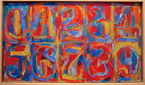
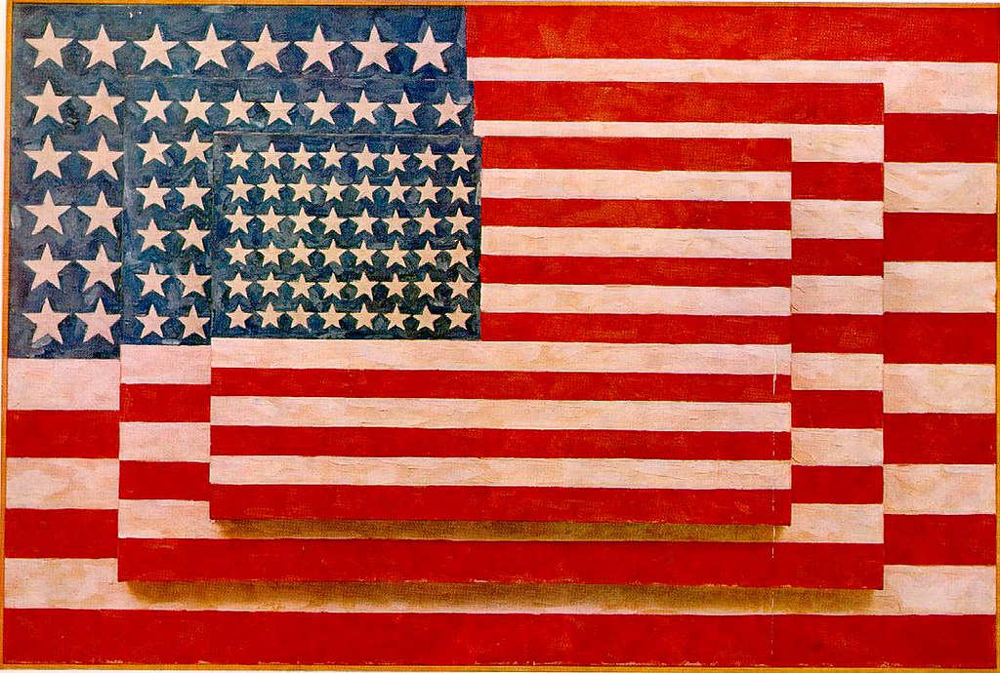
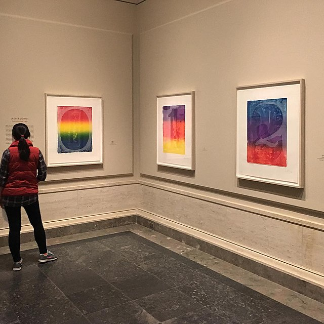

Flag (1954)
Jasper Johns
Revolucionario del Pop Art
Transformó objetos cotidianos en obras maestras icónicas
Documental
Explora la vida y obra del maestro del Pop Art
Biografía
La vida y obra de un artista visionario
Quién fue Jasper Johns
Jasper Johns Jr. (1930-) es un artista estadounidense que revolucionó el arte moderno al transformar objetos y símbolos cotidianos en obras maestras. Nació en Augusta, Georgia, y creció en Carolina del Sur. Se considera uno de los pioneros del Pop Art y un puente fundamental entre el Expresionismo Abstracto y el movimiento Pop.
Su Vida
Johns se trasladó a Nueva York en 1952, donde comenzó su carrera artística. Aunque creció en un entorno modesto, su pasión por el arte lo llevó a convertirse en una figura central en el mundo del arte contemporáneo. Ha sido profesor, artista y mentor de varias generaciones de artistas que aprendieron de su innovador enfoque visual.
Lo que Hizo Revolucionario
Johns cambió la forma en que entendemos el arte al preguntarse: "¿Qué es arte y qué es solo un objeto?" Utilizó símbolos americanos comunes como la bandera, números y letras como temas principales. Combinaba técnicas como óleo, encáustica (pintura con cera caliente) y collage, creando obras con texturas y capas complejas que invitaban a los espectadores a mirar más allá de la superficie.
Su Legado Hoy
Johns ganó la Medalla Nacional de las Artes y su obra se exhibe en los museos más importantes del mundo: MoMA en Nueva York, el Guggenheim y el Museo Metropolitano. Sus ideas sobre cómo transformar lo cotidiano en arte siguen inspirando a artistas contemporáneos. Para los estudiantes, su trabajo enseña que la creatividad no requiere temas complicados: el verdadero arte está en cómo ves las cosas ordinarias.

Obras Principales
Las creaciones que revolucionaron el arte moderno
01
Flag
1954
La obra maestra que cambió el arte moderno. Johns pintó la bandera americana en tamaño natural usando óleo y encáustica. Esta obra revolucionaria planteó una pregunta fundamental: ¿es un objeto cotidiano o una obra de arte? La respuesta fue ambas cosas.
Óleo y Encáustica02
Target with Four Faces
1955
Una diana concéntrica con rostros de yeso en la parte superior. Combina pintura con elementos tridimensionales, desafiando la frontera entre pintura y escultura. Invita al espectador a cuestionar qué está viendo realmente.
Óleo, Encáustica y Yeso03
Numbers
1957-1958
Serie icónica donde los números 0-9 se convierten en arte puro. Cada número está pintado en colores vibrantes y superpuestos. Demuestra que los símbolos cotidianos pueden tener profundidad artística y belleza visual.
Óleo y Encáustica04
Painting with Two Balls
1960
Un lienzo dividido verticalmente con dos esferas de plástico que sobresalen. Una exploración innovadora de cómo la tercera dimensión puede coexistir con la pintura bidimensional, creando tensión visual.
Óleo, Encáustica y Plástico05
Ale Cans
1964
Dos latas de cerveza Ballantine perfectamente esculpidas en bronce. Una irónica crítica del consumismo y la valoración del arte. ¿Cuándo una lata de cerveza se convierte en arte? Cuando un artista decide que lo es.
BronceGalería Visual
Explora su obra a través de imágenes
Target (1955)
Numbers (1957-1958)
Two Balls (1960)

Ale Cans (1964)

Serie Moderna
Técnica Emblemática
Curiosidades
Datos fascinantes sobre su vida y obra
El Sueño que Inspiró Flag
Johns tuvo un sueño en 1954 donde pintaba la bandera americana. Al despertar, decidió pintarla y revolucionó el arte moderno.
Obsesión por los Números
Los números del 0 al 9 se convirtieron en sus símbolos artísticos favoritos, apareciendo en innumerables obras a lo largo de su carrera.
Reconocimiento Internacional
Sus obras se venden por millones de dólares. Flag es considerada una de las obras más importantes del siglo XX.
Colaboración Artística
Johns diseñó trajes y escenarios para el coreógrafo Merce Cunningham, explorando la intersección entre artes visuales y danza.
Artista Versátil
Trabaja con pintura, escultura, litografía, grabado y fotografía, demostrando versatilidad artística sin límites.
Influencia en la Pop Art
Su uso de símbolos cotidianos influyó en artistas como Andy Warhol y Roy Lichtenstein, definiendo el Pop Art.
Referencias
Fuentes y recursos para profundizar
Créditos de Imágenes
- Jasperjohns1.jpg — "Flag" (MoMA). Imagen usada con fines educativos; consulte la colección original: MoMA.
- jasperjohns2.jpg — "Target with Four Faces" (Guggenheim). Fuente: Guggenheim.
- jasperjohns3.jpg — "Numbers" (colecciones públicas). Consulte la colección correspondiente.
- jasperjohns4.webp — "Painting with Two Balls" (MoMA collection).
- Jj4.jpg — "Ale Cans" (Metropolitan Museum).
- jj5.jpg, jj6.jpg — imágenes de estudio y técnica, uso educativo.
Bibliografía Recomendada
- Jasper Johns: A Life — Kirkpatrick Sale
- Jasper Johns: Numbers — Museo de Arte Moderno (MoMA)
- The Paintings of Jasper Johns — Michael Crichton
- Jasper Johns: Work Since 1974 — Publicación del Museo Guggenheim
Colecciones Permanentes
Documentales y Medios
- "Jasper Johns: Something Resembling Truth" (2017)
- "Pop Art: A Movement That Shook the World" — Serie Documental